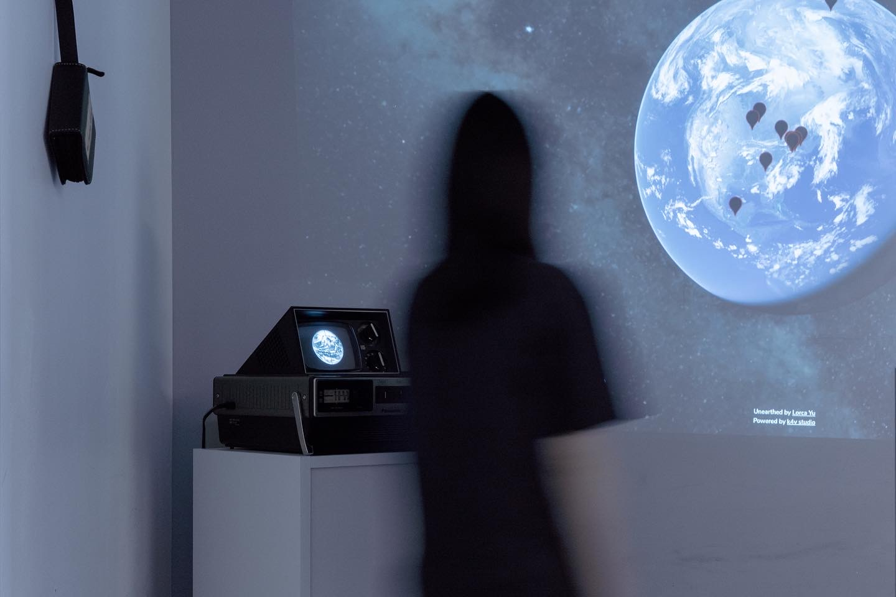
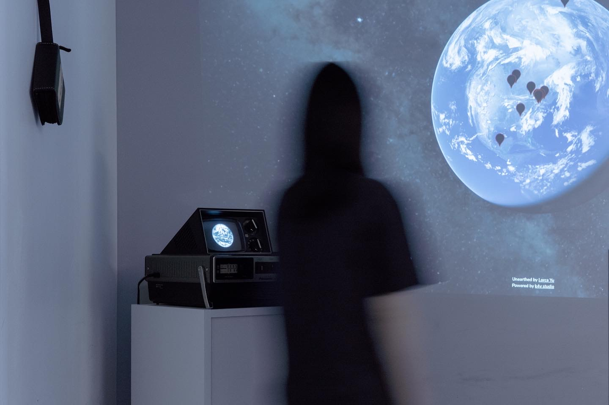
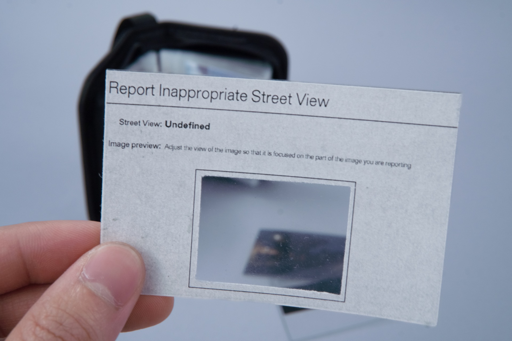
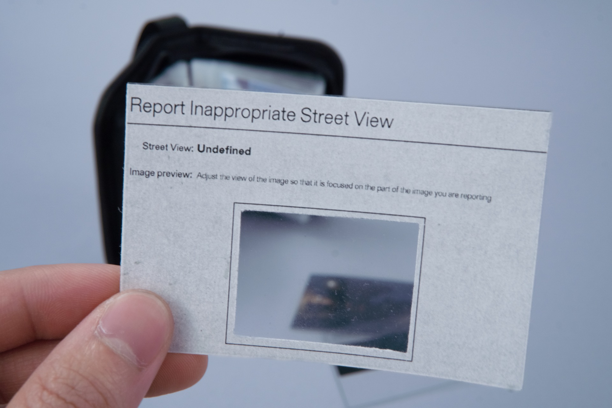

La Noche Cíclica is a multi-part project consisting of
·Video Sculpture – CRT monitor, video essay from navigations through nighttime Google Street View, altered Earth imagery, deliberate screen burn-in line, ambient audio
·Web Archive – interactive index of located night coordinates
·Print – screenshot album of found nightscapes
·Conceptual Intervention – systematic reporting of night fragments to Google as data disruption
La Noche Cíclica examines the absence of night in Google Street View. For both legal and functional reasons, most imagery on the platform is captured during the day, effectively establishing daylight as its "default." As a result, traces of night are difficult to find. Yet the platform's algorithmic reconstruction is far from seamless; its occasional irregularities inevitably conjure fleeting fragmented moments of night within a world overwhelmingly centered around daylight. These rare occurrences—caused by delays in data collection or processing errors—rupture the smooth logic of digital cartography, surfacing as temporal glitches within a self-rationalizing media infrastructure.
Within a capitalist temporality that prioritizes productivity, efficiency, functionality, continuity, and visibility, night is compressed into a brief, transitional state—merely a seam between days. Referencing Jorge Luis Borges' poetic vision of cyclical time, this project uses night to challenge the linear logic of machine vision. What appears as error becomes archive; what is overlooked becomes site. Through these endangered nocturnal fragments, La Noche Cíclica questions how the visible world is constructed through data, algorithms, and a systemic preference for daylight.


 



 
